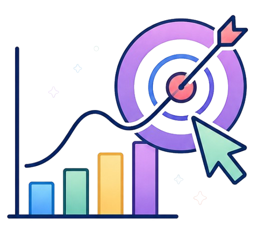

Conecta. Organiza. Avanza.
Toma el control de tu vida universitaria. Organiza tus horarios, calcula tus notas, accede a materiales y encuentra asesorías, todo en un solo lugar.



Toma el control de tu vida universitaria. Organiza tus horarios, calcula tus notas, accede a materiales y encuentra asesorías, todo en un solo lugar.

La plataforma inteligente diseñada para darte el control total de tu recorrido universitario, eliminando la incertidumbre en tus horarios y notas de cada ciclo, mientras te conecta con opiniones sobre docentes, un banco de recursos para consultar y compartir, y asesorías especializadas.
Planifica tus horarios sin miedo a los cruces y conoce exactamente qué notas necesitas antes de rendir tus exámenes.
Elige tus secciones con referencias reales de docentes y apóyate en recursos validados por la comunidad.
Centraliza tu gestión académica en un ecosistema fluido, rápido y accesible desde una sola cuenta.
MÓDULOS
Organiza tu ciclo, simula tus notas, revisa materiales y más.
Apoyo académico diseñado para reforzar tu aprendizaje en los cursos del ciclo, con explicaciones detalladas y recursos de calidad.
Diseña tu ciclo a tu medida. Organiza tus cursos y secciones de forma inteligente, evitando cruces y optimizando tu tiempo. Guarda tus horarios y descárgalos en Excel o PNG cuando los necesites.
Anticipa tus resultados y toma mejores decisiones. Simula tus notas y descubre cómo cada evaluación impacta en tu promedio final.
Encuentra y comparte recursos académicos organizados para complementar tu aprendizaje cuando más lo necesites.
Conoce mejor a tus profesores a partir de las experiencias de otros estudiantes y obtén referencias que te ayuden a elegir tus cursos con mayor criterio.